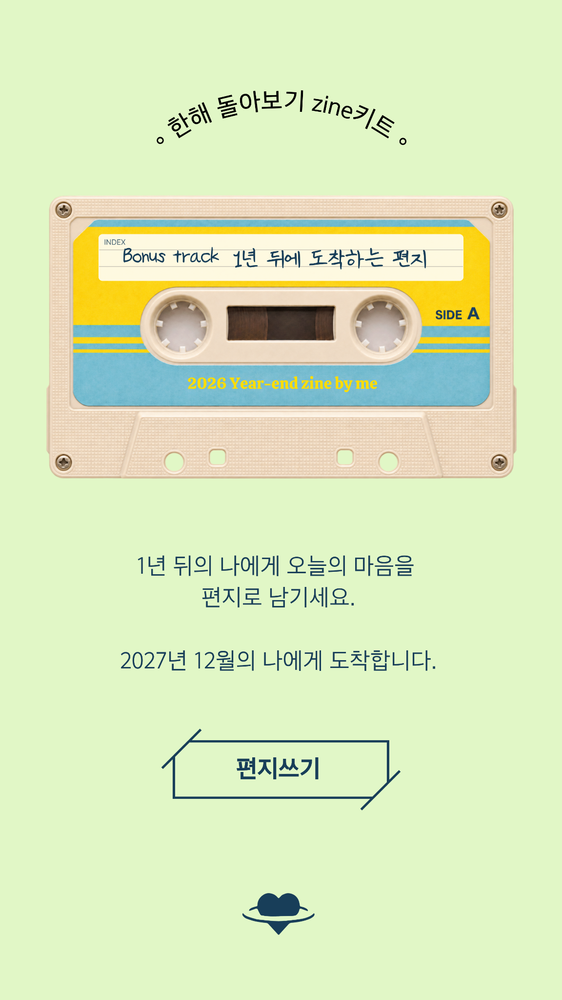

BONUS TRACK / 1년 뒤에 도착하는 편지
지금 내가 2027년 한 해를 또 잘 보내고 난 나에게 주고싶은 응원, 다짐, 위로의 말은 무엇인가요? 무엇이든 소중한 나에게 주고싶은 말을 적어보세요.
0 / 5,000
지금은 디자인 확인용 화면이에요. 입력한 내용은 외부로 전송되지 않으며, 새로고침하면 사라져요.
PREVIEW ONLY
아직 접수되지 않았어요. 실제 접수 기능은 디자인을 확정한 뒤 연결할 예정이에요.
이 화면은 말랑한 마음 보너스트랙의 디자인 미리보기입니다. 현재는 편지를 저장하거나 발송하지 않습니다.
완성된 서비스에서는 2027년 12월에 이메일로 편지를 전달할 예정이에요. 정확한 발송일과 정보 보관·문의 안내는 서비스 시작 전에 안내합니다.